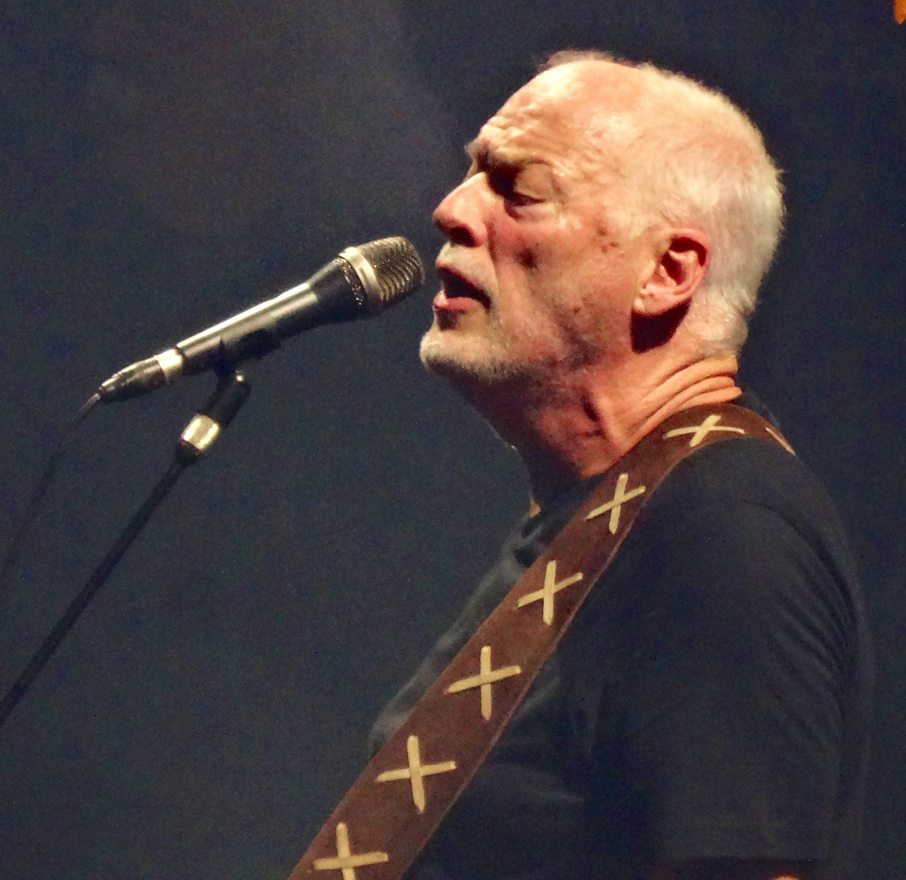
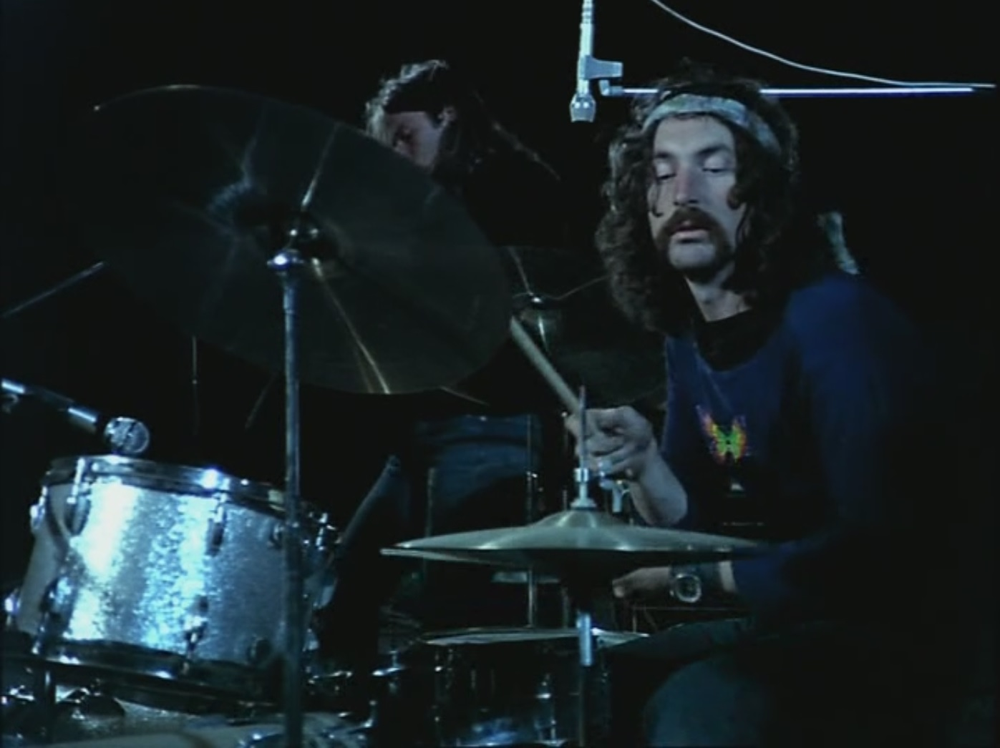
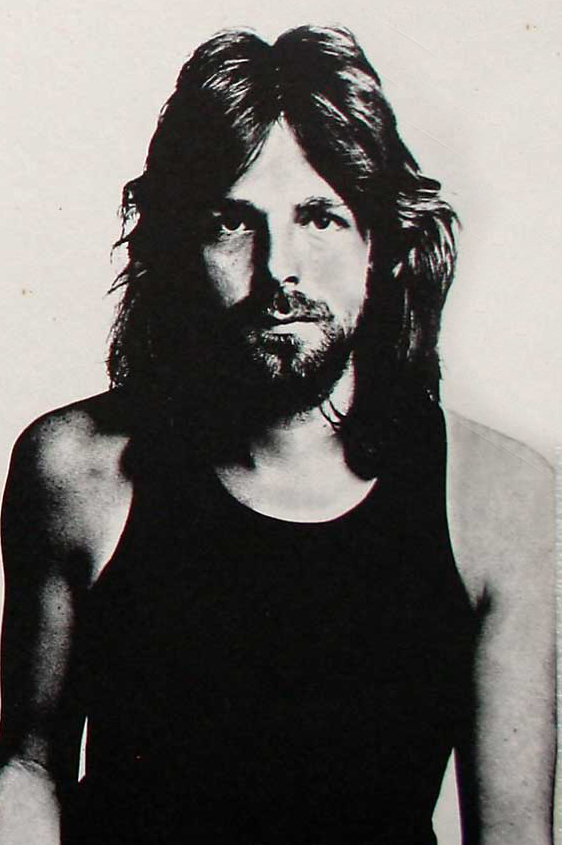

Pink Floyd is a progressive rock band from England. The band was formed by Syd Barrett in 1965 and the members were Syd Barrett, Roger Waters, David Gilmour, Nick Mason and Richard Wright. The band was originally called the Tea Set (sometimes shortened to The T-Set), but at a small music competition another band had that name so Syd Barrett quickly changed it to Pink Floyd (named after blues artists Pink Anderson and Floyd Council). Pink Floyd played progressive rock, alternative rock, hard rock and psychadelic rock - which were very popular genres at the time.
I like Pink Floyd because their lyrics are meaningful and have messages about the time that they were in, which is useful insight for someone in this day and age. The words can be surreal and nonsensical at times, usually not making so much sense when you first listen. Other songs make a lot of sense and are very realistic and close to reality. I also like the album covers because they are really surreal and interesting to look at. I get my inspiration for drawing and making music from Pink Floyd, and as a drummer I take notes from Nick Mason's style and try to apply it and make it comfortable for me.
Pink Floyd is very artistic in many ways. Their music, lyrics and album art is some of the most bizarre and spectacular of the time. I particularly find the album covers the most interesting part of Pink Floyd (apart from the impressive music and live shows). Storm Thorgerson designed many (if not all) of Pink Floyd's albums and he worked closely with the band. He created art such as the Dark Side Of The Moon album design and also came up with the interesting concept of The Division Bell album design, which to me is one of the most interesting covers. The Dark Side Of The Moon album was made by Storm Thorgerson and Aubrey Powell during a late night brainstorm session. Pink Floyd gave them creative freedom with the album concept, only asking for something clean, elegant and graphic. The prism with the light going through to create a rainbow was a design that Thorgerson found in an old physics textbook. He took it to Pink Floyd and they almost immediately approved, with Roger Waters making some slight changes regarding the placing of the design on the cover and making it more creative. That album cover is one of the most influential and most popular album from Pink Floyd and the album design became a defining feature of the band.
| Album | Overview |
|---|---|
| Dark Side Of The Moon | Released: 1 March 1973, the defining album of Pink Floyd, the most popular and successful album |
| The Wall | Released: 30 November 1979, music from Pink Floyd's film 'The Wall', also one of the most popular albums |
| The Division Bell | Released: 28 March 1994, the last recorded album with Richard Wright, who died in 2008 |
| Atom Heart Mother | Released: 2 October 1970, the first album not to have any pictures of the band or feature the band's name |
| Wish You Were Here | Released: 12 September 1975, a tribute to the founding member Syd Barrett who left the band due to deteriorating mental health |
| Piper at the Gates of Dawn | Released: 4 August 1967, was the only album to be released under founding member Syd Barrett's leadership |
| Meddle | Released: 5 November 1971, a group effort that started with nobody knowing what to do with the album concept, which inspired the song 'Echoes' |
| Animals | Released: 21 January 1977, focused on the social and political conditions of Britain at the time. Tension with the band during later production of this album made keyboardist Richard Wright leave the band. |
Syd Barrett
Roger Waters
David Gilmour
Nick Mason
Richard Wright